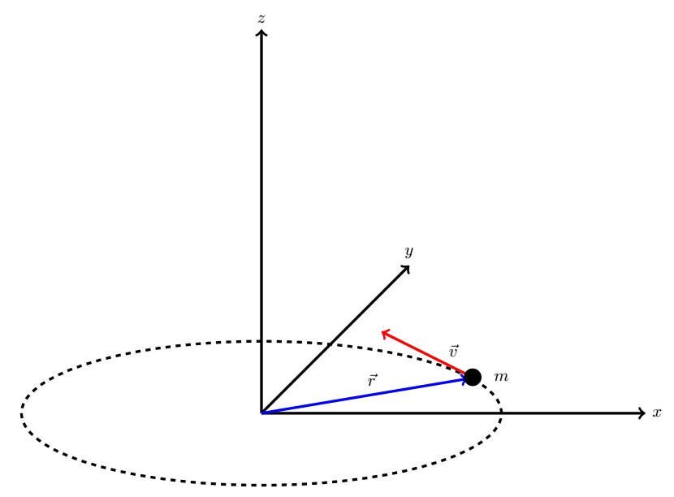
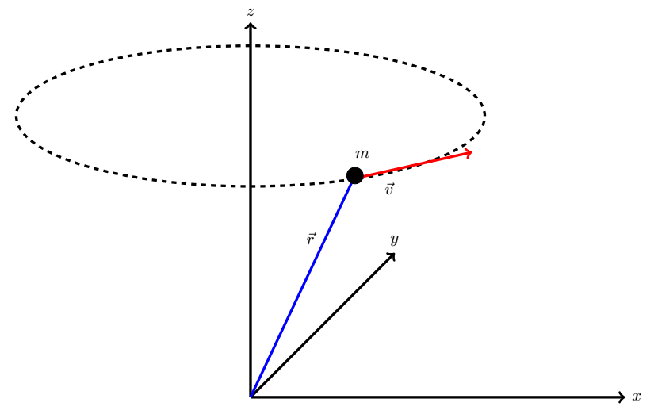
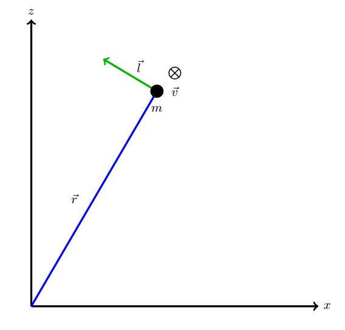
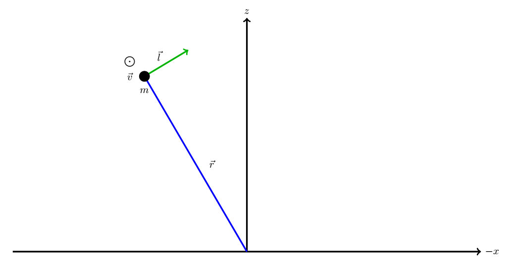
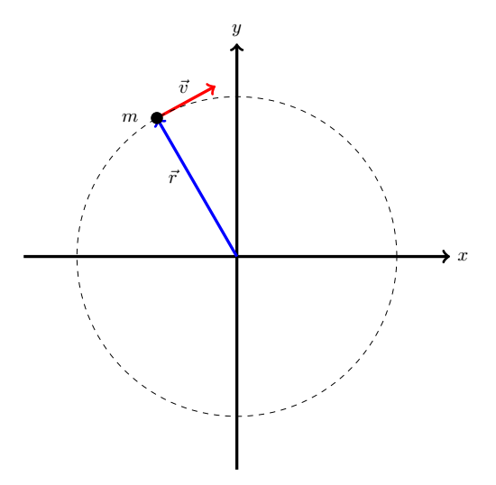
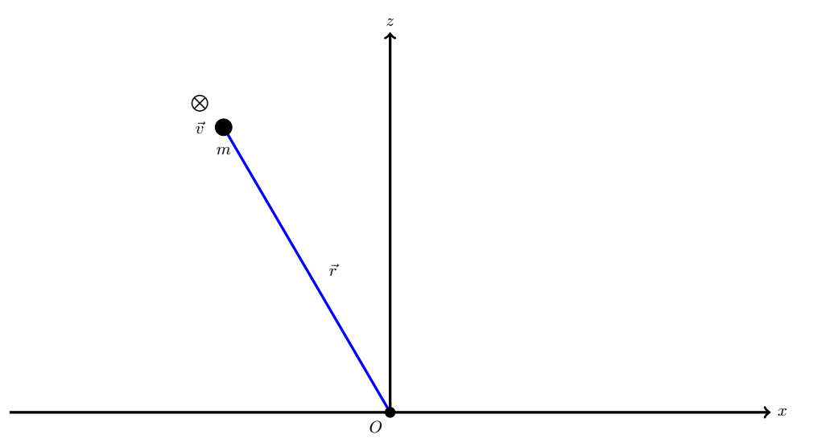
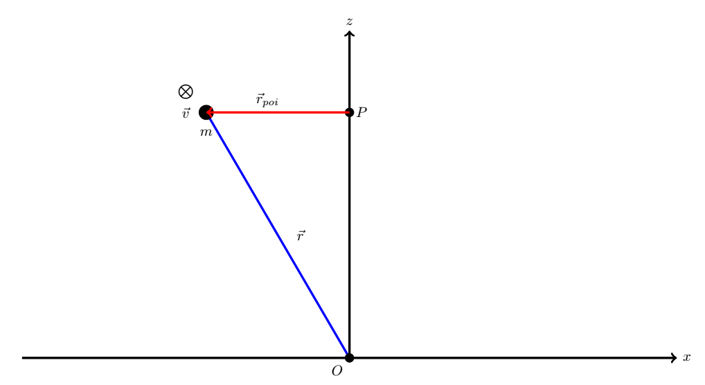
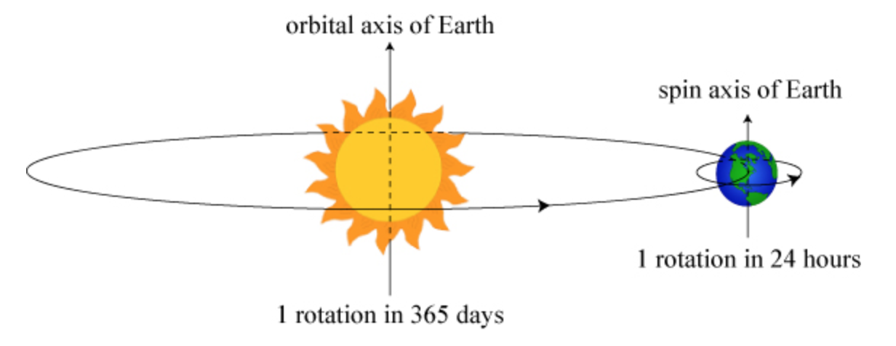
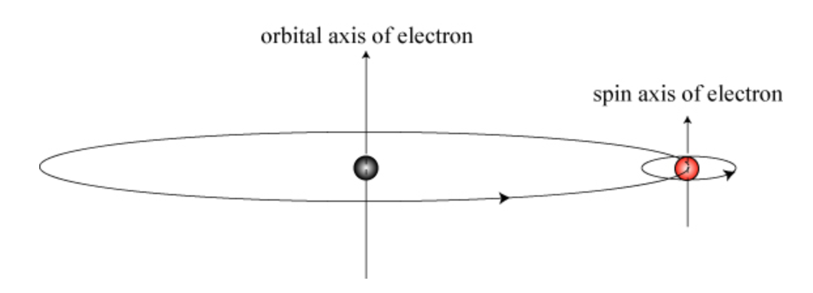
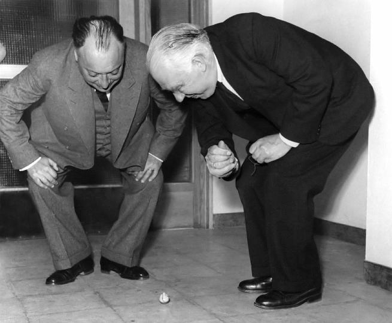

B4.4 Rotational Momentum: Part 2#
B4.4.1 Summary from Part 1#
In Part 1, we saw that for a point particle moving around in the xy-plane had a component of angular momentum along the z-axis according to
or for a continuous system
Similar relationships could be established for objects moving in the xz-plane and the yz-plane.
Remember, we are restricting our discussion on angular momentum to motions confined to one of these planes.
While the above provide us with the component of the angular momentum along the z-direction, we should be aware that the angular momentum is a vector.
B4.4.2 Angular Momentum as a Cross Product#
It turns out that we can write the angular momentum as a cross product as well. Let us consider the figure below
Here we have a point particle with mass \(m\), moving in a circular motion with a tangential velocity \(\vec{v}\) in the xy-plane with z = 0, and position vector \(\vec{r}\).
We will evaluate the cross product between the position vector \(\vec{r}\) and the particle’s linear momentum \(\vec{p}\):
Since \(\vec{p} = m\vec{v} \) we have
The mass \(m\) does not influence the cross product as it is an operation between two vectors and we can separate it outside a paranthesis:
Magnitude#
We can write the cross producte in terms of the magnitudes of the two vectors and the angle between them:
where \(\sin\theta = 1\) since the two vectors are perpendicular.
The tangential speed can be written as \(v = r\omega_z\) since the particle is rotating around the z-axis and we then have:
We can readily identify \(mr^2\) as the moment of inertia aorund the z-axis of the point particle:
which we recognize as the magnitude of the angular momentum of the point particle around the z-axis.
Direction#
Using our right hand rule, we will determine that the direcion of the cross product \(\vec{r}\times\vec{p}\) is in the positive z-direction and we can assign the proper direction to our magnitude above.
Encouraged by the above result, we may be inclined to claim another tool to calculate the angular momentum for a point particle
Important Considerations#
The curious student may ask: what if the particle is moving in the xy-plane but with z \(\neq\) 0?
The answer to this question will illustrate how more complex the angular momentum is. The scenario is illustrated in the figure below:
To simplify the discussion, let us consider consider the instant where the particle is located at a position with y = 0 and view it as a 2D figure:
In this figure, the velocity is directed into the page (or screen) as indicated by the circle with a cross. Using the right-hand rule, the direction of the angular momentum is given by the green arrow (its magnitude is not to scale). We notice that this angular momentum is different from the one determined when the motion was in the xy-plane with = 0. We can draw another schematic where the particle is on the opposite side of the circular motion:
It should be evident by now that the angular momentum is constantly changing directions through its x- and y-components, while the z-component remains constant. This is what we refer to as precession of the angular momentum.
The angular momentum depends on the choice of origin if we choose the vector \(\vec{r}\) to represent the position vector of the particle. We could also say that we choose to calculate the angular momentum around some point of interest (poi) and \(\vec{r}\) is the directed line segment from that point to the instantaneous position of the particle. We can call that directed line segment for \(\vec{r}_{poi}\).
With this in mind, it is more descriptive to rewrite Equation (1) to define the angular momentum of a point particle as
This distinction becomes more evident and important when we introduce the concept of torque.
Example 1
Consider a particle moving in uniform circular motion (circular motion with constant speed) in the xy-plane and z = 0. The mass of the particle is 2.0 kg, its speed is 5.0 m/s, and the radius of the circular motion is 0.50 m. Let the particle travel in a CW direction. Find the angular momentum about the origin.
The magnitude of the angular momentum is given by
We observe that \(\vec{r}_{poi} = \vec{r}\), \(\vec{p} = m\vec{v}\), and the two vectors are perpendicular.
If we write it out in terms of the geometric properties:
Now we can insert our numbers:
Using the right-hand rule, we determine that the direction is in the negative z-direction and our angular momentum is
NOTE: In this example the radius of the circular motion and the magnitude of the position vector were the same. That is not always the case!
Example 2
Consider a particle moving in uniform circular motion (circular motion with constant speed) in the xy-plane and z = 2 m. The mass of the particle is 2.0 kg, its speed is 5.0 m/s, and the radius of the circular motion is 0.50 m. Let the particle travel in a CW direction. Find the magnitude of angular momentum about the origin.
We will use the figure below to properly identify the proper values for our equation.
Since we are interested in the angular momentum around the origin, the position vector \(\vec{r}\) is our \(\vec{r}_{poi}\).
The magnitude of the angular momentum is
The position and velocity vectors are perpendicular, but we must be careful with respect to \(r\). In this case, \(r\) is the magnitude of the position vector and not the radius of the motion. We can find the magnitude of the position vector by using the Pythagorean theorem:
The magnitude of the angular momentum is
NOTE: The magnitude of the angular momentum is constant but its direction keeps changing and it does not make sense to ask about its general direction.
Find the direction of the angular momentum in the Example 2 at the instant that x = -0.50 m and y = 0.00 m (this is the instant shown on the sketch). HINT: write down the vectors in component form and calculate the cross product using the component method. What can we say about the z-component of the angular momentum that differs from that of the x- and y-components?
Example 3
Consider a particle moving in uniform circular motion (circular motion with constant speed) in the xy-plane and z = 2.0 m. The mass of the particle is 2.0 kg, its speed is 5.0 m/s, and the radius of the circular motion is 0.50 m. Let the particle travel in a CW direction. Find the angular momentum about point P.
We will use the figure below to properly identify the proper values for our equation.
Since we are interested in the angular momentum around point P, our \(\vec{r}_{poi}\) is the directed line segment from P to the position of the particle as indicated by the red vector in the figure. We recognize that its magnitude is the same as the radius of the circular motion: \(r_{poi} = 0.5\) m.
The magnitude of the angular momentum is
The angle between \(\vec{r}_{poi}\) and \(\vec{p}\) is 90\(^\circ\) and we get
The right-hand rule tells us that the direction of the angular momentum is in the negative z-direction. This problem is in fact identical to Example 1.
Consider a particle moving in uniform circular motion (circular motion with constant speed) in the xy-plane and z = 4.0 m. The mass of the particle is 1.0 kg, its speed is 7.0 m/s, and the radius of the circular motion is 0.20 m. Let the particle travel in a CCW direction. Find the angular momentum about the following points:
Origin
(x,y,z) = (0,0,2)
(x,y,z) = (1,0,4)
Example 4
A particle of mass 2.0 kg is moving with a velocity (in units of m/s) given by \(\vec{v} = 2.0~\hat{i} + 1.5~\hat{j}\). At a given instant, its position vector (in units of m) is \(\vec{r} = 1.0~\hat{i} - 2.0~\hat{j}\). At this instant, what is its angular momentum about the origin?
Since we are finding the angular momentum about the origin, our \(\vec{r}_{poi} = \vec{r}\) and we have
Using our ugly component formula for cross product, we get
Inserting our values, we have
NOTE: This approach will provide us with the direction and the magnitude can be found by applying the Pythagorean theorem. We also note that the particle is confined to motion in the xy-plane and a quick sketch of the vectors combined with the right-hand rule will confirm that the direction of the angular momentum indeed is in the positive z-direction.
A particle of mass 2.0 kg is moving with a velocity (in units of m/s) given by \(\vec{v} = 2.0~\hat{i} + 1.5~\hat{j}\). At a given instant, its position vector (in units of m) is \(\vec{r} = 1.0~\hat{i} - 2.0~\hat{j} + 3.0~\hat{k}\). At this instant, what is its angular momentum about the origin?
A particle of mass 2.0 kg is moving with a velocity (in units of m/s) given by \(\vec{v} = 2.0~\hat{i} + 1.5~\hat{j}\). At a given instant, its position vector (in units of m) is \(\vec{r} = 1.0~\hat{i} - 2.0~\hat{j} + 3.0~\hat{k}\). At this instant, what is its angular momentum about a point P located at (x,y,z) = (2,0,0)?
HINT: You will need to find \(\vec{r}_{poi}\).
B4.4.3 Angular Momentum of Center of Mass: Orbital Angular Momentum#
We can make a similar defintion for the angular momentum of center of mass of a system of particle or a solid object:
where \(\vec{R}_{poi}\) is the directed line segment from the point of interest to the CM of the system/object and \(\vec{P}\) is the linear momentum of the center of mass system/object. This form of angular momentum is known as the orbital angular momentum.
NOTE: A continuous object can spin around an axis through its CM as well, which is an angular momentum of that system and not its CM. We must differentiate between the two. The above equation is not asscoiated with the spinning of an object, but simply motion of the CM as a point.
Example 5
Consider solid sphere of mass 5.0 kg moving in a uniform circular motion the xy-plane and z = 0 m. The distance from the origin to the CM of the sphere is 2.0 m and the speed of the sphere is 30.0 m/s. What is the magnitude of angular momentum of the center of mass sytem?
Here the magnitude of the \(\vec{R}_{poi}\) is the same as the distance provided, and the magnitude of the CM angular momentum is
B4.4.4 Angular Momentum About CM: Spin Angular Momentum#
A point particle can not rotate about an axis through is center as that concept is non-exisiting for such a particle.
In contrast, an extended object can rotate about an axis passing through its CM. Each point particle making up the object is subject to an orbital angular momentum
about the rotation axis and the total rotational momentum of the object is
We have shown that for a point particle that the cross product approach is the equivalent to \( l_z = i_{z}\omega_z \), and we have for the extended object:
As the object is spinning around its own natural axis we refer to this as the spin angular momentum and is only associated with extended objects.
B4.4.5 Orbital and Spin Angular Momentum Combined#
Consider Example 5: what is the sphere was also spinning around an axis through its own CM? An example of that is the angular momentum of the Earth about a point centered at the Sun. The Earth rotates around the Sun, which provides gives the Earth an angular momentum similar to the one we calculated in Example 5. We call the this the orbital angular momentum. In addition, the Earth has an angular momentum associated with is spinning motion around its axis through its CM. We call this the spin angular momentum.
We could write the total angular momentum of the Earth with respect to a point at the center of the Sun as
where \(\vec{R}\) is the directed line segment from the center of the Sun to the CM of the Earth, \(\vec{P} = M_{Earth}\vec{V}_{Earth}\) with \(\vec{V}_{Earth}\) being the tangential speed of the Earth, \(I\) is the moment of inertia of the Earth around an axis through its CM, and \(\omega\) is the rotational velocity of the Earth.
A similar analogy is made in quantum mechanics in respect to the electron orbiting the nucleus.
Estimate the total angular momentum of the Earth with respect to a point centered at the Sun.
8.4.6 Intriguing Examples of Rotational Dynamics#
To illustrate the complexity of rotatonal dynamics, I will show a few examples here. NOTE: we have not discussed rotational momentum in enough depth to be able to explain all the physics in these examples. When we discuss torque, we will re-visit some of these.
The tippy top was one of Niels Bohr’s favorite physics toys. FYI: angular momentum plays a major role in quantum mechanics and explaining behaviors of atoms and molecules. Below is a picture of Niels Bohr and Wolfgang Pauli observing a tippy top at the Niels Bohr Institute in Copenhagen. Bohr’s model of the atom greatly relied on what we call the orbital angular momentum while Wolfgang Pauli played a major role in formulating the spin concept in quantum mechanics which we refer as the spin angular momentum.
B4.4.7 Clarification Point#
There are a few common mistakes that students (and even professionals) are making. Some of them we have addressed above, but it does not hurt to repeat them here:
The vector \(\vec{r}\) in the cross product is the directed line segment from the point of interest to the position of the particle/object. It does not necessarily have to be the position vector.
The point of interest is sometimes explained as evaluating the angular momentum around a new origin. This does not have to be the case as an observer at a given origin is in principle free to evaluate the angular momentum around any given point. In most cases, the point of interest is the origin. The freedom to choose becomes essential in the disucssion of torque.
B4.4.8 Rotational Impulse#
Just as with linear momentum, the rotational momentum itself is not very interesting. Instead, the impulse is the quantity we are looking for. The rotational impulse is defined in a similar manner as the linear impulse as it is the change in rotational momentum or change in rotational motion:
or
We will talk more about this when we introduce the concept of torque, so put it in the back of your mind for now :)
A disc and a hoop with the same radii and same masses are spinning at the same rate around an axis through the CM and perpendicular to their plane. Which of the two has the greater angular momentum.
Is it possible for an object traveling in straight line motion to have non-zero angular momentum?
A uniform sphere of mass \(m\) and radius \(r\) is spinning around an axis through its CM. Which of the following would have the most influence on a change in its angular momentum: a doubling of its mass or a doubling in its radius?